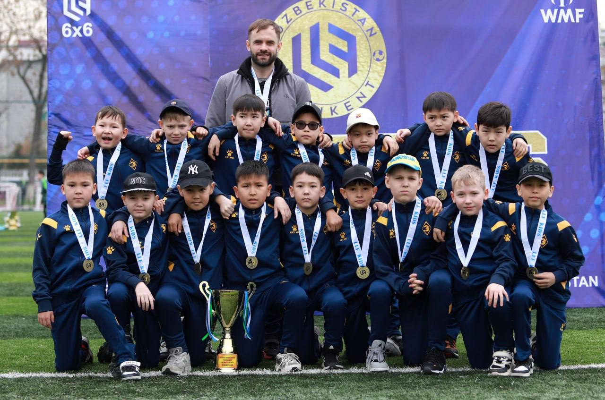
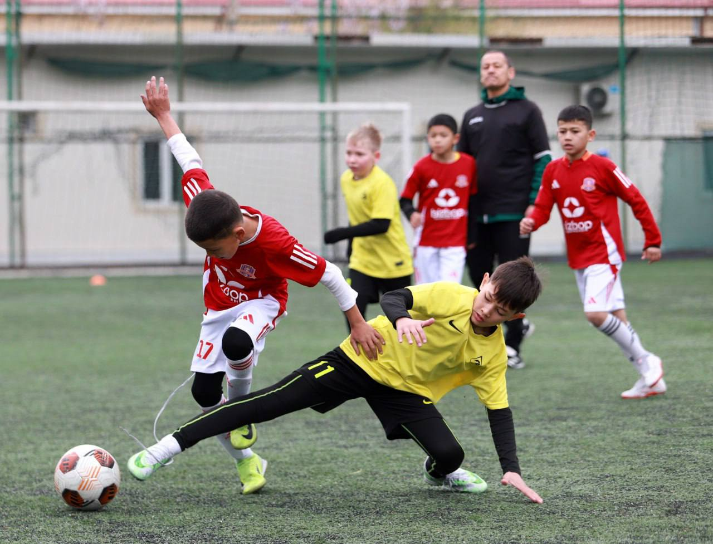
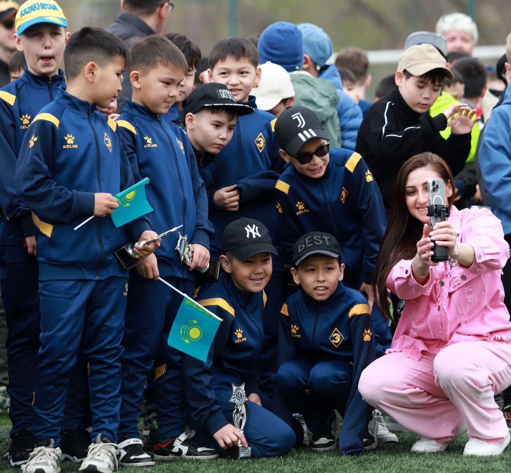

Детская футбольная школа "Энергетик" с гордостью представляет новый проект — группу "Энергетик Про", предназначенную для детей 2014-2015 годов рождения. Наша цель — всестороннее развитие юных футболистов и подготовка их к участию в престижных международных турнирах.
Главным тренером группы является Драченко Максим Олегович — бывший профессиональный футболист с богатым опытом. Максим начал свою карьеру в академии донецкого "Шахтёра", затем выступал за такие клубы, как "Олимпик" (Донецк), "Звезда" (Кропивницкий), "Кызыл-Жар СК", "Окжетпес" (Кокшетау) и "Шахтёр" (Караганда). Его опыт и знания станут бесценными для наших воспитанников. Максим Драченко дважды выходил в еврокубки: с "Олимпиком" (Донецк) в сезоне 2014-2015 и с "Кызыл-Жар СК" в 2021 году, что подтверждает его высокий уровень профессионализма.
Участие в международных турнирах: Мы планируем регулярные поездки на соревнования в такие страны, как Узбекистан, Кыргызстан, Грузия и Турция. Это позволит детям не только повысить уровень игры, но и познакомиться с различными футбольными культурами, обменяться опытом со сверстниками и расширить свой кругозор.
Развитие ключевых навыков: Футбол способствует формированию у детей трудолюбия, целеустремлённости, выносливости и терпения. Участие в соревнованиях и тренировках учит контролировать эмоции, развивает самодисциплину и устойчивость к стрессу. Дети учатся работать в команде, принимать решения в условиях соревнований, что положительно сказывается на их личностном росте.
Стоимость: 20 000 тенге в месяц.
Тренировочный процесс в "Энергетик Про" основан на современных тенденциях футбола. Мы используем передовые методики подготовки, направленные на развитие технических, тактических и физических навыков игроков. Важную роль играет индивидуальный подход к каждому ребёнку, позволяя раскрыть его потенциал и вывести на новый уровень.
Наши тренировки проходят в интенсивном режиме с акцентом на игровую практику, что позволяет юным футболистам максимально быстро адаптироваться к соревновательным условиям и повышать уровень мастерства.
Тренировки проходят 3 раза в неделю + участие в турнирах.
Международные турниры каждые 3 месяца.
А также восстановительные мероприятия
Мы уделяем большое внимание медийному сопровождению наших мероприятий. Наш мобилограф фиксирует ключевые моменты тренировок, игр и турниров, создавая профессиональный фото- и видеоконтент. Родители смогут следить за прогрессом своих детей и наслаждаться яркими моментами их футбольного пути.
В течение года мы будем тщательно отслеживать прогресс каждого ребёнка, предоставляя родителям регулярные отчёты о достижениях и областях для улучшения. Наша конечная цель — подготовить детей к поступлению в ведущие футбольные академии Казахстана и других стран, открывая перед ними широкие перспективы в мире профессионального футбола. Завершением годовой программы станут учебно-тренировочные сборы в Турции в январе-феврале 2026 года, где дети смогут закрепить полученные навыки и подготовиться к будущим вызовам на футбольном поле. Мы уверены, что участие в проекте "Энергетик Про" станет для вашего ребёнка важным шагом на пути к спортивным достижениям и личностному росту.
По вопросам записи обращайтесь по телефону: +7 XXX XXX XX XX